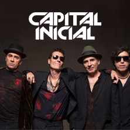

Biografias dos meus cantores favoritos
Humberto Guessiger

Humberto Gessinger (Porto Alegre, 24 de dezembro de 1963) é um cantor, compositor, baixista, multi-instrumentista e escritor brasileiro. É especialmente conhecido por ter fundado a banda Engenheiros do Hawaii, na qual tocou de 1985 até 2008, quando o grupo entrou em uma espécie de hiato por tempo indeterminado. Com esta banda, lançou mais de 20 álbuns - entre álbuns de estúdio, ao vivo, coletâneas e de vídeo -, conquistando oito discos de ouro, um de platina e 3 DVDs de ouro, além de ter vendido mais de 3 milhões de álbuns[1] e emplacado diversos sucessos fonográficos. Na sequência, participou do duo Pouca Vogal, ao lado de Duca Leindecker, com quem lançou três álbuns e participou de extensa turnê entre 2008 e 2012. Desde 2013, lança discos e faz shows como parte de sua carreira solo que começou em 1996, mas estava parada devido à carreira de seus grupos.
O estilo musical predominante em sua produção discográfica é o rock, especialmente nas vertentes new wave, rock gaúcho e folk rock. Em toda a sua discografia, aparecem bastante as influências do rock progressivo dos anos 1970, da MPB - especialmente, do Clube da Esquina - e da MPG, bem como do regionalismo gaúcho. Em relação a esta última, Humberto busca incluir em sua música diversos instrumentos que são significantes para este estilo, como a gaita, a viola caipira, o bandolim e o acordeão. Filho de Huberto Aloysio Gessinger e Casilda Nilsa Minatti, Humberto nasceu em 24 de dezembro de 1963, em Porto Alegre.[1] O casal teve mais 3 filhos: Maria Rosália, em 1957; Rosana Maria, em 1961; e João Rodolfo, em 1965. Os pais de Humberto eram professores: ela de geografia e ele de latim, francês e português. Como o pai dele dava aulas no Colégio Anchieta, os filhos frequentavam a escola sem ter que pagar as caras mensalidades. Além disso, tinham dificuldades em ter amigos porque moravam longe da escola e Humberto também porque era muito tímido. Desde cedo passou a se interessar por música, sempre tendo um gosto bem eclético e ouvindo desde rock até música nativista. Assim, passou a ir a pé para a escola para economizar o dinheiro do ônibus e comprar discos. Quando criança, ganhou um violão pelo seu gosto por "Era um Garoto Que como Eu Amava os Beatles e os Rolling Stones", na versão de Os Incríveis,[2] e de "Picaço Velho", de José Mendes. Em 1976, seu pai adoeceu de leucemia, vindo a falecer dois anos depois.[3]
A partir dessa época, começa a se interessar ainda mais por música, especialmente rock progressivo e música instrumental. No seu aniversário de 15 anos, ganha sua primeira guitarra, uma Giannini Diamond, e um amplificador. Ao procurar aulas de violão, vê seu professor Ayrton Fagundes da Silva - conhecido como Ayrton do Bandolim - tocando choro em um bandolim, passando a se interessar pelo estilo musical e pelo instrumento. Assim, compra diversos discos de Waldir Azevedo e Jacob do Bandolim. Seu professor avisa ele que choro é um estilo que não dá pra tocar sozinho e o convence a montar um grupo para praticar. Humberto, então, convida alguns de seus colegas de Anchieta - Cláudio Gerdau Johannpeter e Nestor Forster Filho, nos violões, e Ricardo Horn, no cavaquinho - para tocarem junto com ele. O grupo chegou a se apresentar em alguns bares próximos da casa dos Gessinger, onde ensaiavam, mas a proximidade do vestibular levou ao fim do conjunto. Humberto prestou o concurso para arquitetura e entrou na Universidade Federal do Rio Grande do Sul no início de 1981.[4]
Desde pequeno, Humberto torce para o Grêmio, embora tenha desenvolvido uma afinidade pelo Botafogo quando residiu no Rio de Janeiro, entre 1988 e 1997.[5] No ano em que se mudou para a capital fluminense, casou-se com a arquiteta Adriane Sesti, antiga colega de escola e faculdade. Em 1992, o casal teve uma filha chamada Clara.[6
Capital inicial

Fernando Ouro Preto, o vocalista Dinho, nasceu Curitiba, 27 de abril de 1964.
Após experimentar o papel de baixista da banda “dado e o reino animal”, em 1983 Dinho entra para os vocais do Capital Inicial. Em 1993, Dinho se afasta do Capital e lança seus dois primeiros álbuns em carreira solo: Vertigo, em 1994, e Dinho Ouro Preto, em 1995. Mas em 98 Dinho já está de volta, e a banda segue sua estrada.
O grande susto
Em 31 de outubro de 2009 Dinho cai de um palco, a cerca de 3 metros e sofre um traumatismo craniano leve. Na manhã de 1 de novembro Dinho é internado na unidade de terapia intensiva do hospital Hospital Sírio-Libanês em São Paulo, e após cinco dias de internação, tem que voltar para a UTI por causa de uma infecção.
A volta por cima começa no dia 30 de dezembro. Dinho saiu do hospital, depois de quase um mês internado. Logo depois a banda se encontra em estúdio para a gravação de seu novo álbum, Das Kapital.
LEIA ABAIXO TEXTO COMPLETO AUTORAL DO DINHO SOBRE SUA CARREIRA
Olá, eu sou Dinho Ouro Preto e meu nome “de verdade” é Fernando, mas desde que me conheço por gente sou chamado de Dinho. Nasci em Curitiba no dia 27 de Abril de 1964 (arrghh, eu odeio essa data, acho que na real não gosto de ficar mais velho…) e sou o vocalista do Capital.
O rock entrou na minha vida quando eu tinha uns 12 anos. Andando pelas ruas da SQS 104 (isso é um endereço em Brasília!) eu conheci o Bi e o Herbert. Os Paralamas ainda não existiam, mas eles já eram amigos. Os dois eram um pouco mais velhos do que eu e meus melhores amigos eram o Pedro, irmão do Bi, e o Dado Villalobos.
Sendo mais velhos, o Bi e o Herbert , ficavam mostrando pra gente o som que eles gostavam. Basicamente Led Zeppelin e Jimi Hendrix. Aliás, o primeiro disco que comprei na minha vida foi um ao vivo do Hendrix tocando Sunshine of your love. Aos poucos fui descobrindo outras bandas bacanas, AC/DC, Queen, Thin Lizzy, Black Sabbath, Aerosmith e um milhões de outras. Aos treze anos o rock já era a coisa mais importante da minha vida. As paredes do meu quarto eram cobertas de fotos e posters dos meus heróis. Eu ia ver qualquer coisa que tivesse a ver com guitarra, baixo e bateria. Várias vezes íamos a shows só pra ver uma guitarra ou um baixo.
Eu lembro, por exemplo, a primeira vez que vi uma guitarra Gibson….foi uma experiência transformadora. Também lembro do dia em que o Herbert ganhou a primeira Gibson dele; nem era um dos modelos mais conhecidos – acho que era uma L6S -, mas, mesmo assim, nos reunimos em volta dela como se fosse a coisa mais preciosa que havíamos visto até então.
Logo depois minha família resolveu morar uns anos fora do Brasil. Fui parar em Genebra e ali eu pude pela primeira vez ver shows. Vi Peter Gabriel, Rory Gallagher, Status Quo e mais um monte de outras bandas.
Genebra é uma cidade pequena e pra ver shows de bandas maiores a gente tinha que ir pra outras cidades. O problema era convencer meus pais a nos deixar viajar sozinhos pra assistir um show. Aliás era inútil, pois eles nunca deixavam. A solução que eu e meu irmão encontramos foi simplesmente fugir e tentar voltar antes que eles percebessem. Por incrível que pareça, dava certo.
Uma vez escapamos depois deles dormirem e fomos até Zurique de trem ver o Rush. Chegando lá descobrimos que o show tinha sido cancelado. A história que contaram pra dois moleques brasileiros não nos convenceu: Disseram que o guitarrista tinha quebrado a mão. Tá bom, conta outra… a gente achou que era frescura de rock star, não que não continuássemos a amar o Rush, mas ouvíamos as histórias dos excessos desses caras. O gozado é que, vinte anos depois, eu vou até Boston entrevistar o trio antes da vinda deles ao Brasil.
Raimundos

O grupo foi constituído em Brasília no ano de 1987. Era formado pelos vizinhos Digão, na bateria, e Rodolfo Abrantes, na guitarra.[4] Eram influenciados pelas bandas Dead Kennedys, Suicidal Tendencies e Ramones,[5] atuando como cover desta última. Na época, faltava um baixista, e então Canisso passou a tocar com a dupla.[6]
A primeira apresentação da banda foi realizada na casa de Gabriel Thomaz, cantor do Autoramas, durante a virada de ano de 1988.[7] Fred, que estava presente naquela apresentação, eventualmente se tornou baterista da banda.[8] Dentre suas influências, Raimundos também incorporou a cultura nordestina,[9] em parte em virtude do compositor de forró Zenilton,[10] considerado pelos integrantes da banda como sua maior influência nordestina.[11] Rodolfo, mais tarde, recordou: "Minha família é da Paraíba, e eu me lembro que desde os dez anos, eu sempre ia naqueles churrascos com os meus pais. Tocava forró o tempo inteiro, e eu achava aquilo um saco. Só gostava das canções do Zenilton, por causa das letras sacanas, achava aquilo muito fera."[12]
O ritmo da banda se manteve constante até sua separação, em 1990:[13] Canisso começou a estudar Direito na Universidade de Brasília e teve filhos; Digão deixou de tocar bateria por problemas auditivos e começou a tocar guitarra;[14] e Rodolfo por sua vez passou a cantar na banda Royal Street Flesh,[15] casou-se e mudou-se para o Rio de Janeiro. O retorno se deu em 1992 com uma oportunidade em tocar em um bar de Goiânia.[17] Como Digão havia passado para a guitarra, a banda começou a procura por um baterista, chegando até a utilizar uma bateria eletrônica. Não obtendo bons resultados, recrutam Fred, que na época já era fã do grupo.[18][19] No ano seguinte a banda gravou uma fita demonstrativa contendo "Nega Jurema", "Marujo", "Palhas do Coqueiro" e "Sanidade", iniciando então divulgação pelo país. A banda passou a ser reconhecida pela mídia e por outras bandas, e foi convidada a tocar no Rio de Janeiro. Nesta época, abriram apresentações de Camisa de Vênus e Ratos de Porão no Circo Voador, além de uma temporada para o Titãs.[20]
Em 1994, lançam seu primeiro disco, intitulado apenas como Raimundos, pelo selo Banguela dos Titãs.[21] O disco teve boa aceitação, vendendo mais de 150 mil cópias.[22] O som pesado, com letras cheias de palavrões e com fortes influências nordestinas, chamou a atenção da mídia e do público, com canções como "Puteiro em João Pessoa". O grande sucesso do álbum foi a balada pornô-erótica "Selim", que impulsionou as vendas do disco e tornou a banda conhecida no país inteiro. O álbum foi de extrema importância para o cenário musical brasileiro, devido ao som inovador (intitulado "forró-core") e ao fato de ter sido um dos responsáveis pela "abertura de portas" para o rock dos anos 90, influenciando praticamente todas as bandas que se formariam depois.[23][24]
Em 1995, voltam ao estúdio pra gravar Lavô Tá Novo pela gravadora Warner. Com mais ênfase no hardcore em detrimento ao forró, gerou sucessos como "Esporrei Na Manivela", "Pitando No Kombão", "O Pão da Minha Prima" e "I Saw You Saying (That You Say That You Saw)" e superou as vendas do original.[25][26] Os Raimundos se consolidaram com participações nos festivais Monsters of Rock e Hollywood Rock, onde tocaram ao lado de grupos clássicos como Motorhead e Iron Maiden.[27] Em 1996 a banda lança uma caixa com CD, história em quadrinhos e fita VHS chamada Cesta Básica